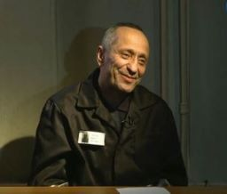

Russian Serial Killer
Alias: The Werewolf,
The Angarsk Maniac
Born: Mytishchi, Russia
Victims: 78 confirmed, 83 confessed
Status: Life Inprisonment
Mikhail Viktorovich Popkov was a Russian police officer and infamous serial killer born on March 7, 1964. Popkov ‘s reign of terror throughout Russia lasted between 1992 - 2010 (Sinsiwa, 2020) and it is believed that his victims resembled traits which reminded him of his alcoholic and abusive mother. He hinted however that his murder spree began due to his wife’s infidelity (Sinsiwa, 2020). Popkov would often wait outside bars for intoxicated women and use his police uniform and vehicle to gain their trust. He would use whichever weapon he could acquire from the evidence locker and wipe his fingerprints off after using them. He later described the process as a decision he had to make based on the victim’s behaviour and attitude during the car ride. If they had a ‘bad attitude’ he would take them into the woods and brutally murder them. Popkov was notorious for the gruesome crime scenes he would often create, thus giving him the nickname “The Werewolf”. Popkov later participated in an internal DNA testing by the police force, which tested around 3500 police officers (Sinsiwa, 2020). Popkov’s DNA matched to bodily fluid found on one of the victims, and he was immediately taken into custody. When he was arrested on June 23, 2012, many of his co-workers and close relative were shocked, describing him as “very charming, likeable, funny, and the life of the party” (Medium, 2012), (Sinsiwa, 2020). In later interviews, Popkov stated he wanted to clean the city of immoral women, and that he had a “desire to punish them” (ABC News, 2018).